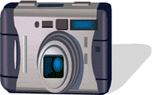
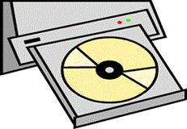
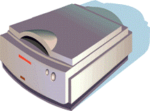

by Nick Cottrell

This is a digital camera. I can download pictures from my camera to my computer and insert them into my Web pages.
Learn more about Digital cameras.

This is a CD-ROM. I can copy text, pictures, sound, and video stored on CD-ROMs into my Web pages.
Learn More about CD-ROMs.

This is a scanner. The scanner creates digital files of the image it scans. I can insert these files into my Web pages.
Learn more about scanners.